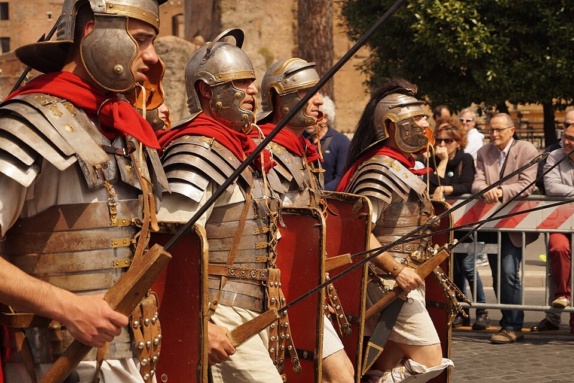

L'Armée Romaine

La légion, cœur de l'armée
L'armée romaine est organisée autour de la légion, une unité d'environ 4 000 à 6 000 soldats citoyens. Chaque légion est divisée en manipules puis en cohortes, des unités tactiques flexibles capables de s'adapter au terrain. Cette flexibilité est l'une des grandes forces de l'armée romaine face aux armées en phalanges rigides.
Les soldats romains sont des citoyens qui doivent posséder un minimum de biens pour servir. Ils s'équipent eux-mêmes : casque, bouclier ovale (scutum), deux javelots (pila) et une épée courte (gladius). L'entraînement est intense et la discipline, brutale : la décimation — exécuter un soldat sur dix d'une unité défaillante — reste une sanction possible.
Source : Wikipedia — Légion romaine
Tactiques et discipline
La tactique romaine repose sur le combat rapproché et la supériorité physique et psychologique. Les légionnaires lancent leurs pila pour désorganiser les rangs ennemis, puis chargent à l'épée courte, bien protégés derrière leur grand bouclier. La formation en tortue (testudo) permet de progresser sous une pluie de projectiles.
Ce qui distingue vraiment les Romains, c'est leur capacité à apprendre de leurs défaites. Après les désastres face à Hannibal, ils adoptent la tactique de Fabius Maximus — le harcèlement et l'évitement de la bataille rangée — pour épuiser l'armée carthaginoise avant de reprendre l'offensive.
Source : Wikipedia — Légion romaine
Une armée qui s'adapte
Au début des guerres puniques, Rome n'a pas de flotte de guerre digne de ce nom. En 260 av. J.-C., elle construit en quelques mois une flotte de 120 navires en copiant un bateau carthaginois échoué. Elle invente même le corbeau, un pont d'abordage mobile, pour transformer les batailles navales en combats terrestres — là où ses légionnaires excellent.
Cette capacité d'adaptation et d'innovation rapide, combinée à des ressources humaines quasi inépuisables, fait de l'armée romaine la machine de guerre la plus efficace de l'Antiquité. Elle sera le modèle des armées professionnelles pendant des siècles.
Source : Wikipedia — Légion romaine